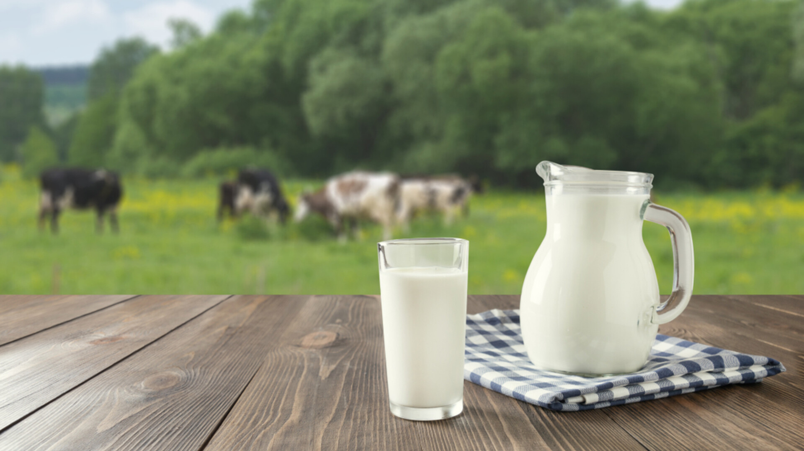

Sign In
Produsele noastre sunt rezultatul unei combinații perfecte între tradiție și inovație. Totul începe
Folosim procese naturale, precum pasteurizarea și fermentarea controlată, pentru a asigura
Sustenabilitatea este esențială pentru noi. Ne asigurăm că laptele provine de la animale crescute în mod
#Poiana Laptelui
Cum le producem?
Cum le producem?
Produsele noastre sunt rezultatul unei combinații perfecte între tradiție și inovație. Totul începe
cu laptele proaspăt, obținut de la animale crescute liber în aer curat, hrănite cu iarbă și fân din pajiști
naturale. Laptele este colectat zilnic pentru a asigura prospețimea și calitatea fiecărui produs.
După colectare, laptele este prelucrat cu grijă folosind metode tradiționale, transmise din generație
în generație. Fiecare etapă a producției, de la pasteurizare și fermentare până la maturarea brânzeturilor,
este realizată cu atenție la detalii și fără compromisuri.
Ne mândrim că nu folosim aditivi sau conservanți artificiali. Fiecare produs este 100% natural,
iar gustul său reflectă puritatea ingredientelor și dedicarea echipei noastre.
Cum păstrăm produsele noastre naturale și fără conservanți?
Folosim procese naturale, precum pasteurizarea și fermentarea controlată, pentru a asigura
prospețimea produselor fără a adăuga conservanți. De asemenea, ambalajele noastre sunt
gândite pentru a păstra produsele în condiții optime pe tot parcursul transportului și depozitării.
Totul este realizat rapid, de la colectarea laptelui până la livrare, pentru a aduce pe mesele
consumatorilor produse cât mai proaspete și naturale.
